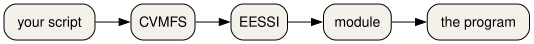

Software from a shared stack
Last updated on 2026-10-26 | Edit this page
Estimated time: 50 minutes
Overview
Questions
- Why do you load software instead of installing it into your home directory?
- How do you get the same Python on the cluster and in a container?
Objectives
- Explain why a shared software stack is easier to support than a private install.
- Source the EESSI 2025.06 init script and read the CPU target it prints.
- Use
module avail,module spider, andmodule loadto select a program. - Name the site command
module load 2025and the portable init script it stands in for on the course cluster. - Point to the EasyBuild book when the question is how a module was built, and stop there.
One copy, many people
If every person compiles their own Python, the cluster fills up with almost the same files, and nobody can say which one a paper used. A shared stack is one curated set of builds. You select a build by loading a module. The files stay on a shared file system. Your home directory stays for your own scripts and small inputs.
EESSI is that kind of stack, distributed with CVMFS. CVMFS shows a
directory tree that is the same on every machine that mounts it, and it
fetches a file when you first use it. The tree for this lesson is
/cvmfs/software.eessi.io.

How those builds are produced is a different course. EasyBuild is the tool that turns a recipe into the module you load. Read that story in the book at https://hpceb.rgoswami.me/ and in the sources at https://github.com/HaoZeke/what-easybuild-is-doing. This episode only uses the result.
Start the stack
On any machine where the repository is mounted, including the EESSI client container:
The script loads the EESSI/2025.06 module and prints
three kinds of lines: that the module loaded, which CPU target it
selected, and whether it saw a GPU. The CPU line depends on the machine.
On one Intel Sapphire Rapids host it was:
Module for EESSI/2025.06 loaded successfully
EESSI has selected x86_64/intel/sapphirerapids as the compatible CPU target for EESSI/2025.06
EESSI did not identify an accelerator on the systemYour line may name a different CPU. Read the line. Do not copy a path from someone else's CPU into your script. The init script picks the path for you.
Two variables are stable:
They print 2025.06 and
/cvmfs/software.eessi.io.
The previous stack is still there. After module purge,
module load EESSI/2023.06 switches to it. You can also
source
/cvmfs/software.eessi.io/versions/2023.06/init/lmod/bash in
a new shell. Do not load both stacks in one shell. Purge first.
On the course cluster you do not have to source that file by hand.
module load 2025 loads EESSI 2025.06. The names
2024 and foss/2023a load that same stack on
the course cluster, so older scripts keep working. On Snellius,
module load 2025 is how you select the 2025 site stack.
Prefer the explicit init script when you are in the container, because
the container does not define the site name 2025.
QCG-PilotJob is not part of EESSI 2025.06.
module spider QCG-PilotJob reports that it cannot find it.
The cluster installs it as a site module, loaded after
module load 2024. That is the next episode but one. Do not
spend this episode searching the EESSI tree for it.
Find a Python and load it
module avail prints a long list.
module spider Python searches it. In EESSI 2025.06 the
Python modules include:
Python/3.12.3-GCCcore-13.3.0Python/3.13.1-GCCcore-14.2.0-
Python/3.13.5-GCCcore-14.3.0(the default)
In EESSI 2023.06 one of the modules is
Python/3.11.5-GCCcore-13.2.0.
Load the 2025.06 default, then ask Python where it lives:
python3 --version prints Python 3.13.5. The
prefix is under /cvmfs/software.eessi.io/versions/2025.06/.
The CPU directory in the middle of that path is the one the init script
chose.
module list shows what is loaded.
module purge unloads it. ml is the short form
of module once the init script has run.
A faded load
BASH
source /cvmfs/software.eessi.io/versions/________/init/lmod/bash
module load Python/________
python3 --versionFor this course the version is 2025.06 and the module is
Python/3.13.5-GCCcore-14.3.0.
Predict the version string
Write down what you expect the next block to print. Then run it. On a
cluster, run it in a shell where you have sourced the init script, or
where module load 2025 has already set the stack up. In the
container, the check below runs the same questions for you.
What is EESSI_VERSION after the 2025.06 init? What
Python version do you get from
Python/3.13.5-GCCcore-14.3.0? After a purge and
module load EESSI/2023.06, what version does
Python/3.11.5-GCCcore-13.2.0 report?
BASH
# runner: eessi
set +u
source /cvmfs/software.eessi.io/versions/2025.06/init/lmod/bash >/dev/null
set -u
printf '%s\n' "$EESSI_VERSION"
printf '%s\n' "$EESSI_CVMFS_REPO"
module load Python/3.13.5-GCCcore-14.3.0
python3 -c 'import sys; print(sys.version.split()[0]); prefix=sys.prefix; print("eessi-prefix" if prefix.startswith("/cvmfs/software.eessi.io/versions/2025.06/") else "unexpected")'
module purge >/dev/null
module load EESSI/2023.06 >/dev/null
module load Python/3.11.5-GCCcore-13.2.0
python3 -c 'import sys; print(sys.version.split()[0])'eessi-prefix means the prefix started with the 2025.06
tree. The CPU directory is allowed to differ. set +u lets
the init script read a variable that may be unset, and
set -u turns that check back on.
Load Python on the cluster
On the course cluster:
BASH
module purge
module load 2025
module spider Python
module load Python/3.13.5-GCCcore-14.3.0
python3 --version
which python3On Snellius, module load 2025 selects the site 2025
stack. If Python/3.13.5-GCCcore-14.3.0 is not the name
there, trust module spider Python and load the newest 3.13
it offers. Write the full module name in your notes.
If /cvmfs/software.eessi.io is missing, use the
container path from the setup page and run the block in the solution
above.
python3 --version prints Python 3.13.5 when
that module exists. which python3 prints a path under the
stack, not under /usr/bin. If the site stack uses a
different build, the version string changes and that is the number you
record. Mixing a site module load with a second
source of the init script in the same shell is how two
Pythons end up on PATH. Purge first.
- A shared stack means one supported copy of a program, selected with a module.
-
source /cvmfs/software.eessi.io/versions/2025.06/init/lmod/bashprepares EESSI 2025.06. -
module spidersearches.module loadselects.module purgeclears the selection. - On the course cluster,
module load 2025is the site name for EESSI 2025.06. - EasyBuild, and how a module file is produced, is the book at https://hpceb.rgoswami.me/.